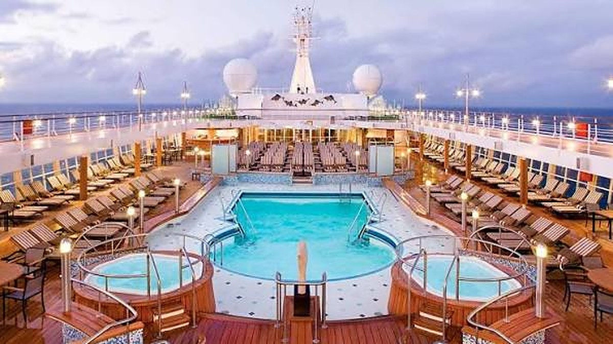

A cruise ship's pool deck at dusk: on a day call the ship is the passenger's hotel, and the luggage never comes ashore. Photograph: Onyango George / EA Hospitality Pulse
East Africa is counting cruise ships. The number that pays is bed nights.
Mombasa's record 2025/26 cruise season delivered 4,889 passengers across nine calls, under four per cent of a single month's air arrivals into Zanzibar, and almost none of them slept ashore. The published schedule for the season now opening shows four calls and not one turnaround. The region is lobbying for berths when the thing that converts a day call into a bed night is scheduled lift.
On the last day of June the MS Viking Yi Dun tied up at Kilindini with 717 passengers aboard, most of them Chinese, the first Asian-sourced cruise vessel ever to call at Mombasa. It was also the ninth and final call of the 2025/26 season. Two men standing on the quay said almost exactly the same thing. Capt. William Ruto, managing director of the Kenya Ports Authority, observed that "one day is not enough for visitors to experience the beautiful scenery of Mombasa". Mohamed Hersi, group director of operations at Pollman's Tours and Safaris, put it to the passengers directly: "I wish you were staying longer so that you could enjoy more of what Kenya has to offer."
Both were describing, politely, the central commercial fact about cruise tourism in East Africa, which is that it does not sell beds. A cruise call is a day business. It delivers a crowd to a quay for eight or twelve hours, sells them an excursion, a lunch and a carving, and sails. The region is budgeting it as a bed-night market, lobbying for it as one, and setting targets against it as one. The arithmetic does not support any of that, and the season now opening is the moment to say so, because the published schedule for it is thinner than the one it follows.
Start with the scale. The 2025/26 Mombasa season, running from October to June, brought 4,889 tourists across nine calls, according to the Kenya News Agency account of that final arrival. That was a record. The season before it managed five vessels and 4,205 tourists. Set the record against the business it is supposed to feed. Zanzibar took 124,481 international arrivals by air in August 2026 alone, up 18 per cent on the 105,506 of August 2025, at an estimated bed occupancy of 92.9 per cent, on figures published by the Office of the Chief Government Statistician in September. An entire nine-month cruise season across the water amounts to under four per cent of one month of Zanzibar's air traffic, and almost none of it sleeps ashore at all.
Timing sharpens the point. Last season opened on 29 October, when the SH Diana called. As this piece is written, at the end of October, the published forward schedule for Mombasa carries four calls for the whole of 2026/27 and the earliest of them is in December: Hapag-Lloyd's ms Europa 2 on 14 December, Regent's Seven Seas Voyager on 9 January, and Phoenix Reisen's Artania alongside from 3 to 5 April. Forward cruise schedules are incomplete by nature and fill in through the year, so this is a snapshot rather than a verdict. But it is the snapshot an operator pricing the coast season has to work from, and it shows no step change.
The global picture argues against waiting for one. Cruising is in a genuine boom: the Cruise Lines International Association counted 37.2 million ocean passengers in 2025, up 7.5 per cent on 34.6 million the year before, and forecasts 38.3 million for 2026 and 40.3 million for 2027, on an orderbook that adds roughly 29 per cent more lower berths between now and 2037. Africa and the Middle East as a destination region took about 457,800 of those passengers in 2025, down 11.6 per cent year on year. The industry grew; this region's share of it shrank. There is no rising tide here to be lifted by, only a redistribution happening elsewhere.
The source markets explain why, and they matter more than the headline count. CLIA puts Germany at 21.8 per cent of passengers cruising the Africa and Middle East region, South Africa at 17.9 per cent and Russia at 8.5 per cent. Now look at the three ships actually booked into East African ports for the coming season. Two of the three, the ms Europa 2 and the Artania, are German-market vessels. Zanzibar's air arrivals in August, by contrast, were 14.1 per cent Italian, 7.9 per cent British and 6.9 per cent German. The cruise guest and the lodge guest are not the same person, are not sourced in the same country, and do not arrive through the same channel. A coastal hotel that treats cruise traffic as incremental demand from its existing markets has misread the manifest.
There is a stranger feature of the schedule that almost nobody says out loud. Those same three ships call at both ports within days of each other. The ms Europa 2 is at Zanzibar on 12 December and Mombasa on 14 December. The Seven Seas Voyager is at Mombasa on 9 January and Zanzibar on 10 January. The Artania leaves Mombasa on 5 April and is at Zanzibar on the 6th. Mombasa and Zanzibar are not two cruise markets competing for traffic. They are two stops on one itinerary, selling to the same passenger on the same hull in the same week. Neither port can win share from the other. The only variable either controls is what it extracts in the hours it has, and whether it can persuade that passenger to come back on a plane.
Which brings in the number that would actually change the business. In a CLIA survey of 1,884 recent cruisers taken in December 2025, 64 per cent had stayed at least one night in a port city before or after their cruise. Fifteen per cent took a night at both ends, 5 per cent took two nights, 7 per cent took three or more, and the share has sat between 64 and 70 per cent for about two and a half years. The land stay, in other words, is not a hard sell. Nearly two thirds of cruise passengers already buy one. They buy it at the turnaround port, where the cruise begins or ends and the aeroplane has to be met, not at a mid-itinerary day call where the ship is their hotel and their luggage never leaves it.
That is why one call in that nine-call season was worth more to the coast than most of the other eight together. On 4 January the Crystal Symphony stayed 48 hours at Mombasa, about 250 passengers went ashore for good, and a similar number boarded for the next leg. June Chepkemei, chief executive of the Kenya Tourism Board, read it correctly at the time. "Mombasa's turnaround success with Crystal Symphony showcases our ports' readiness for longer stays," she said, adding that "this 48-hour turnaround is a game-changer for Mombasa, it spreads economic impact far beyond the dock". She also set a target in the same breath: "We're targeting 20 ships in 2026 to build on 2025's momentum." Nine arrived. And the published schedule for the season now opening contains no turnaround at all. The Europa 2 is in at eight in the morning and gone by eight in the evening. The Seven Seas Voyager likewise. Only the Artania buys the coast more than a single trading day, and that is one ship sitting for two nights rather than a crew change that fills hotel rooms.
A word of caution about all of these figures, because the counting here is genuinely unreliable and an operator needs to know it. The tourism board's own account of 2025 says Mombasa and Lamu received 12 ships carrying over 15,000 visitors, with shorter stays up 140 per cent. The news agency figure for the preceding season is five vessels and 4,205 tourists. Both cannot be a like-for-like count of the same thing: one appears to be a calendar year across multiple ports and to include crew, the other a season at Mombasa counting tourists. Even the season-opening SH Diana call is reported at 120 passengers in one tally and 250 in another. Three questions should be put to every published cruise number before it enters a forecast. Which ports. Which months. Does it count crew.
As for what a day call is worth when it does arrive, the best-documented benchmark is not African. The Florida-Caribbean Cruise Association's study across 33 Caribbean and Latin American destinations, covering May 2023 to April 2024, put average onshore spend at $104.36 per port visit: 41 per cent on retail, 32 per cent on shore excursions, 18 per cent on food and drink, 9 per cent on local transport, with a spread from $73.21 in Belize to $176.73 in the US Virgin Islands. The figures are survey-derived rather than drawn from transaction records, and there is a standing academic complaint that cruise industry impact studies overstate passenger spending. Treat the number as a ceiling and apply it anyway. Four thousand eight hundred and eighty-nine passengers at a hundred dollars is roughly half a million dollars of onshore spend across an entire season, shared out among excursion operators, drivers, Old Town traders and the gate at Fort Jesus. That is a real revenue line for a tour desk. It is not one for a hotel.
The practical reading for an operator follows from that. Price and roster the cruise call as a day business: excursions, day-use rooms, lunch covers, spa hours, and a cash and card plan that survives a four-hour surge of passengers who have no local currency and no intention of acquiring much. Do not hold inventory for it. Do not carry it in the budget as bed nights.
And the lobbying should change its target. Hersi, as chairman of the Kenya Tourism Federation, argued last December that "Mombasa, Lamu and Shimoni seaports should tap into cruise ship tourism by upgrading marine infrastructure". Ruto said the ports authority was poised to increase the capacity of those same three ports. Benjamin Tayari, the authority's chairman, credited streamlined electronic travel authorisation processing, saying "such initiatives are already yielding results". Berths and immigration throughput are necessary conditions and worth having. Neither converts a day call into a bed night. Turnaround status does, and turnaround status is not mainly a quay question: it is baggage handling, provisioning, bonded stores, and above all scheduled long-haul lift out of Mombasa on the days a ship turns. No line will begin or end an itinerary at a port its passengers cannot fly into, however deep the water.
The honest version of the ambition is therefore narrow, unglamorous and achievable: become the turnaround port for one small-ship line on one Indian Ocean itinerary, and that stable 64 per cent does the rest of the work by itself. The version currently being sold, a growing cruise market that will lift coastal occupancy, is the one the numbers refuse. Chepkemei's phrase about economic impact spreading far beyond the dock was right about the single 48-hour call it described and wrong as a description of the season that call opened. Ruto's remark on the quay in June was the more useful sentence, and it was not a compliment. One day is not enough. The only question worth asking about the season now beginning is whether anybody is building the thing that would make it two.
📣 Telegram 💬 WhatsApp 💼 LinkedIn 📚 All guides